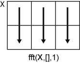

fft
Fast Fourier transform
Description
Y = fft(X)X using a fast Fourier transform
(FFT) algorithm. Y is the same size as X.
If
Xis a vector, thenfft(X)returns the Fourier transform of the vector.If
Xis a matrix, thenfft(X)treats the columns ofXas vectors and returns the Fourier transform of each column.If
Xis a multidimensional array, thenfft(X)treats the values along the first array dimension whose size does not equal 1 as vectors and returns the Fourier transform of each vector.
Y = fft(X,n)n-point DFT.
If
Xis a vector and the length ofXis less thann, thenXis padded with trailing zeros to lengthn.If
Xis a vector and the length ofXis greater thann, thenXis truncated to lengthn.If
Xis a matrix, then each column is treated as in the vector case.If
Xis a multidimensional array, then the first array dimension whose size does not equal 1 is treated as in the vector case.
Examples
Find the frequency components of a signal buried in noise and find the amplitudes of the peak frequencies by using Fourier transform.
Specify the parameters of a signal with a sampling frequency of 1 kHz and a signal duration of 1.5 seconds.
Fs = 1000; % Sampling frequency T = 1/Fs; % Sampling period L = 1500; % Length of signal t = (0:L-1)*T; % Time vector
Form a signal containing a DC offset of amplitude 0.8, a 50 Hz sinusoid of amplitude 0.7, and a 120 Hz sinusoid of amplitude 1.
S = 0.8 + 0.7*sin(2*pi*50*t) + sin(2*pi*120*t);
Corrupt the signal with zero-mean random noise with a variance of 4.
X = S + 2*randn(size(t));
Plot the noisy signal in the time domain. The frequency components are not visually apparent in the plot.
plot(1000*t,X) title("Signal Corrupted with Zero-Mean Random Noise") xlabel("t (milliseconds)") ylabel("X(t)")

Compute the Fourier transform of the signal.
Y = fft(X);
Because Fourier transforms involve complex numbers, plot the complex magnitude of the fft spectrum.
plot(Fs/L*(0:L-1),abs(Y),"LineWidth",3) title("Complex Magnitude of fft Spectrum") xlabel("f (Hz)") ylabel("|fft(X)|")

The plot shows five frequency peaks including the peak at 0 Hz for the DC offset. In this example, the signal is expected to have three frequency peaks at 0 Hz, 50 Hz, and 120 Hz. Here, the second half of the plot is the mirror reflection of the first half without including the peak at 0 Hz. The reason is that the discrete Fourier transform of a time-domain signal has a periodic nature, where the first half of its spectrum is in positive frequencies and the second half is in negative frequencies, with the first element reserved for the zero frequency.
For real signals, the fft spectrum is a two-sided spectrum, where the spectrum in the positive frequencies is the complex conjugate of the spectrum in the negative frequencies. To show the fft spectrum in the positive and negative frequencies, you can use fftshift. For an even length of L, the frequency domain starts from the negative of the Nyquist frequency -Fs/2 up to Fs/2-Fs/L with a spacing or frequency resolution of Fs/L.
plot(Fs/L*(-L/2:L/2-1),abs(fftshift(Y)),"LineWidth",3) title("fft Spectrum in the Positive and Negative Frequencies") xlabel("f (Hz)") ylabel("|fft(X)|")

To find the amplitudes of the three frequency peaks, convert the fft spectrum in Y to the single-sided amplitude spectrum. Because the fft function includes a scaling factor L between the original and the transformed signals, rescale Y by dividing by L. Take the complex magnitude of the fft spectrum. The two-sided amplitude spectrum P2, where the spectrum in the positive frequencies is the complex conjugate of the spectrum in the negative frequencies, has half the peak amplitudes of the time-domain signal. To convert to the single-sided spectrum, take the first half of the two-sided spectrum P2. Multiply the spectrum in the positive frequencies by 2. You do not need to multiply P1(1) and P1(end) by 2 because these amplitudes correspond to the zero and Nyquist frequencies, respectively, and they do not have the complex conjugate pairs in the negative frequencies.
P2 = abs(Y/L); P1 = P2(1:L/2+1); P1(2:end-1) = 2*P1(2:end-1);
Define the frequency domain f for the single-sided spectrum. Plot the single-sided amplitude spectrum P1. As expected, the amplitudes are close to 0.8, 0.7, and 1, but they are not exact because of the added noise. In most cases, longer signals produce better frequency approximations.
f = Fs/L*(0:(L/2)); plot(f,P1,"LineWidth",3) title("Single-Sided Amplitude Spectrum of X(t)") xlabel("f (Hz)") ylabel("|P1(f)|")

Now, take the Fourier transform of the original, uncorrupted signal and retrieve the exact amplitudes at 0.8, 0.7, and 1.0.
Y = fft(S); P2 = abs(Y/L); P1 = P2(1:L/2+1); P1(2:end-1) = 2*P1(2:end-1); plot(f,P1,"LineWidth",3) title("Single-Sided Amplitude Spectrum of S(t)") xlabel("f (Hz)") ylabel("|P1(f)|")

Convert a Gaussian pulse from the time domain to the frequency domain.
Specify the parameters of a signal with a sampling frequency of 44.1 kHz and a signal duration of 1 ms. Create a Gaussian pulse with a standard deviation of 0.1 ms.
Fs = 44100; % Sampling frequency T = 1/Fs; % Sampling period t = -0.5:T:0.5; % Time vector L = length(t); % Signal length X = 1/(0.4*sqrt(2*pi))*(exp(-t.^2/(2*(0.1*1e-3)^2)));
Plot the pulse in the time domain.
plot(t,X) title("Gaussian Pulse in Time Domain") xlabel("Time (t)") ylabel("X(t)") axis([-1e-3 1e-3 0 1.1])

The execution time of fft depends on the length of the transform. Transform lengths that have only small prime factors result in significantly faster execution time than those that have large prime factors.
In this example, the signal length L is 44,101, which is a very large prime number. To improve the performance of fft, identify an input length that is the next power of 2 from the original signal length. Calling fft with this input length pads the pulse X with trailing zeros to the specified transform length.
n = 2^nextpow2(L);
Convert the Gaussian pulse to the frequency domain.
Y = fft(X,n);
Define the frequency domain and plot the unique frequencies.
f = Fs*(0:(n/2))/n; P = abs(Y/sqrt(n)).^2; plot(f,P(1:n/2+1)) title("Gaussian Pulse in Frequency Domain") xlabel("f (Hz)") ylabel("|P(f)|")

Compare cosine waves in the time domain and the frequency domain.
Specify the parameters of a signal with a sampling frequency of 1 kHz and a signal duration of 1 second.
Fs = 1000; % Sampling frequency T = 1/Fs; % Sampling period L = 1000; % Length of signal t = (0:L-1)*T; % Time vector
Create a matrix where each row represents a cosine wave with scaled frequency. The result, X, is a 3-by-1000 matrix. The first row has a wave frequency of 50, the second row has a wave frequency of 150, and the third row has a wave frequency of 300.
x1 = cos(2*pi*50*t); % First row wave x2 = cos(2*pi*150*t); % Second row wave x3 = cos(2*pi*300*t); % Third row wave X = [x1; x2; x3];
Plot the first 100 entries from each row of X in a single figure in order and compare their frequencies.
for i = 1:3 subplot(3,1,i) plot(t(1:100),X(i,1:100)) title("Row " + num2str(i) + " in the Time Domain") end

Specify the dim argument to use fft along the rows of X, that is, for each signal.
dim = 2;
Compute the Fourier transform of the signals.
Y = fft(X,L,dim);
Calculate the double-sided spectrum and single-sided spectrum of each signal.
P2 = abs(Y/L); P1 = P2(:,1:L/2+1); P1(:,2:end-1) = 2*P1(:,2:end-1);
In the frequency domain, plot the single-sided amplitude spectrum for each row in a single figure.
for i=1:3 subplot(3,1,i) plot(0:(Fs/L):(Fs/2-Fs/L),P1(i,1:L/2)) title("Row " + num2str(i) + " in the Frequency Domain") end

Create a signal that consists of two sinusoids of frequencies 15 Hz and 40 Hz. The first sinusoid is a cosine wave with phase , and the second is a cosine wave with phase . Sample the signal at 100 Hz for 1 s.
Fs = 100; t = 0:1/Fs:1-1/Fs; x = cos(2*pi*15*t - pi/4) + cos(2*pi*40*t + pi/2);
Compute the Fourier transform of the signal. Plot the magnitude of the transform as a function of frequency.
y = fft(x); z = fftshift(y); ly = length(y); f = (-ly/2:ly/2-1)/ly*Fs; stem(f,abs(z)) title("Double-Sided Amplitude Spectrum of x(t)") xlabel("Frequency (Hz)") ylabel("|y|") grid

Compute the phase of the transform, removing small-magnitude transform values. Plot the phase as a function of frequency.
tol = 1e-6; z(abs(z) < tol) = 0; theta = angle(z); stem(f,theta/pi) title("Phase Spectrum of x(t)") xlabel("Frequency (Hz)") ylabel("Phase/\pi") grid

Interpolate the Fourier transform of a signal by padding with zeros.
Specify the parameters of a signal with a sampling frequency of 80 Hz and a signal duration of 0.8 s.
Fs = 80; T = 1/Fs; L = 65; t = (0:L-1)*T;
Create a superposition of a 2 Hz sinusoidal signal and its higher harmonics. The signal contains a 2 Hz cosine wave, a 4 Hz cosine wave, and a 6 Hz sine wave.
X = 3*cos(2*pi*2*t) + 2*cos(2*pi*4*t) + sin(2*pi*6*t);
Plot the signal in the time domain.
plot(t,X) title("Signal superposition in time domain") xlabel("t (ms)") ylabel("X(t)")

Compute the Fourier transform of the signal.
Y = fft(X);
Compute the single-sided amplitude spectrum of the signal.
f = Fs*(0:(L-1)/2)/L; P2 = abs(Y/L); P1 = P2(1:(L+1)/2); P1(2:end) = 2*P1(2:end);
In the frequency domain, plot the single-sided spectrum. Because the time sampling of the signal is quite short, the frequency resolution of the Fourier transform is not precise enough to show the peak frequency near 4 Hz.
plot(f,P1,"-o") title("Single-Sided Spectrum of Original Signal") xlabel("f (Hz)") ylabel("|P1(f)|")

To better assess the peak frequencies, you can increase the length of the analysis window by padding the original signal with zeros. This method automatically interpolates the Fourier transform of the signal with a more precise frequency resolution.
Identify a new input length that is the next power of 2 from the original signal length. Pad the signal X with trailing zeros to extend its length. Compute the Fourier transform of the zero-padded signal.
n = 2^nextpow2(L); Y = fft(X,n);
Compute the single-sided amplitude spectrum of the padded signal. Because the signal length n increased from 65 to 128, the frequency resolution becomes Fs/n, which is 0.625 Hz.
f = Fs*(0:(n/2))/n; P2 = abs(Y/L); P1 = P2(1:n/2+1); P1(2:end-1) = 2*P1(2:end-1);
Plot the single-sided spectrum of the padded signal. This new spectrum shows the peak frequencies near 2 Hz, 4 Hz, and 6 Hz within the frequency resolution of 0.625 Hz.
plot(f,P1,"-o") title("Single-Sided Spectrum of Padded Signal") xlabel("f (Hz)") ylabel("|P1(f)|")

Input Arguments
Input array, specified as a vector, matrix, or multidimensional array.
If X is an empty 0-by-0 matrix, then
fft(X) returns an empty 0-by-0 matrix.
Data Types: double | single | int8 | int16 | int32 | uint8 | uint16 | uint32 | logical
Complex Number Support: Yes
Transform length, specified as [] or a nonnegative
integer scalar. Specifying a positive integer scalar for the transform
length can improve the performance of fft. The length is
typically specified as a power of 2 or a value that can be factored into a
product of small prime numbers (with prime factors not greater than 7). If
n is less than the length of the signal, then
fft ignores the remaining signal values past the
nth entry and returns the truncated result. If
n is 0, then
fft returns an empty matrix.
Example: n = 2^nextpow2(size(X,1))
Data Types: double | single | int8 | int16 | int32 | uint8 | uint16 | uint32 | logical
Dimension to operate along, specified as a positive integer scalar. If you do not specify the dimension, then the default is the first array dimension whose size does not equal 1.
fft(X,[],1)operates along the columns ofXand returns the Fourier transform of each column.
fft(X,[],2)operates along the rows ofXand returns the Fourier transform of each row.![fft(X,[],2) row-wise operation](fft_dim_2.png)
If dim is greater than ndims(X),
then fft(X,[],dim) returns X. When
n is specified, fft(X,n,dim) pads
or truncates X to length n along
dimension dim.
Data Types: double | single | int8 | int16 | int32 | uint8 | uint16 | uint32 | logical
Output Arguments
More About
Tips
The execution time of
fftdepends on the length of the transform. Transform lengths that have only small prime factors (not greater than 7) result in significantly faster execution time than those that are prime or have large prime factors.For most values of
n, real-input DFTs require roughly half the computation time of complex-input DFTs. However, whennhas large prime factors, there is little or no speed difference.You can potentially increase the speed of
fftusing the utility functionfftw. This function controls the optimization of the algorithm used to compute an FFT of a particular size and dimension.
Algorithms
The FFT functions (fft, fft2,
fftn, ifft, ifft2,
ifftn) are based on a library called FFTW [1]
[2].
References
[1] FFTW (https://www.fftw.org)
[2] Frigo, M., and S. G. Johnson. “FFTW: An Adaptive Software Architecture for the FFT.” Proceedings of the International Conference on Acoustics, Speech, and Signal Processing. Vol. 3, 1998, pp. 1381-1384.
Extended Capabilities
Version History
Introduced before R2006a